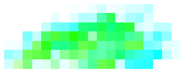

可以使用“像素”(Pixel)笔刷（如果要为游戏创建纹理，则非常有用），在各个像素上绘制颜色、白炽度和透明度值。使用“像素”(Pixel)笔刷绘制的笔划不进行抗锯齿处理。

在画布上绘制像素
- 选择“笔刷 > 单像素笔刷”(Brush > Single Pixel Brush)以启用像素笔刷。笔刷变为指针
- 放大要进行像素绘制的区域，以便可以看到像素。若要放大，请按 Alt 键（Windows 和 Linux）或 Option 键 (Mac OS X)，并同时使用鼠标左键和中键拖动。
- 根据需要修改“Color1”、“Incandescence1”和“Transparency1”属性值（在“Paint Effects 笔刷设置”(Paint Effects Brush Settings)窗口或工具栏上的“着色”(Shading)部分）。
- 单击各个像素，或者在像素上拖动以绘制它们。
- 完成像素绘制后，关闭“笔刷 > 单像素笔刷”(Brush > Single Pixel Brush)以切换到“Paint Effects 工具”(Paint Effects Tool)。